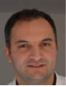

Psikolojik Danışman ve Kişisel Gelişim Uzmanı Erdinç Üstündağ kimdir?
Almanya doğumludur. İlköğretim okulunu Türkiye’de Malatya’da tamamladı. Eğitimine daha sonra Almanya’da devam ederek Psikolojik, Kişisel ve Mental Eğitimlerini Almanya´da tamamladı. Bu alanda NLP, YOGA, HİPNOZ eğitimi aldı.
Psikoloji ve Kişisel Gelişim Uzmanı olarak Avrupa Psikoloji Merkezini kurdu. Avrupa’nın 15 ülkesiyle çalışmaya başladı. İstek üzerine Azerbaycan’a da psikoloji ve eğitim danışmanlığı ve kekemelik üzerine hizmet sundu.
Psikolojik konulu makaleleri ulusal ve yerel medyada yayınlandı. STV, FOX Türk, SHOW Türk, TGRT EU, Kanal 7 Int, ATV Avrupa, Euro D, Euro Star, TRT kanallarında değişik zamanlarda uzman konuk olarak programlara katıldı.
Değişik konularda ve yerlerde seminerler, eğitim konferansı, kişisel gelişim toplantılarında uzman olarak görev aldı. Özel ve kamu kurum ve kuruluşlarında, değişik şirketlerde mentörlük yaparak personel ve yönetici motivasyonu kursları düzenledi.
Kekemelik üzerine hizmet sunarak on günde kekemeliğe son vermeyi başardı ve başarısını televizyonda canlı yayında ispatladı. Çok sayıda ulusal ve uluslararası tanınırlıktaki sanatçı ve mankene “Kariyer Koçluğunda” bulundu.
Avrupa’da ve Almanya Kulüplerin futbolcularının bir kısmına danışmanlık hizmeti verdi.
Bütün bu görevlerine aktif olarak halen devam etmektedir. Kendisi çok sayıda derneğin üyesi, buna paralelde Fransa Türk Tabipler Birliği üyesi olan Psikoloji ve Kişisel Gelişim Uzmanı Erdinç Üstündağ Türkçenin yanında Almanca ve orta düzeyde İngilizce biliyor.